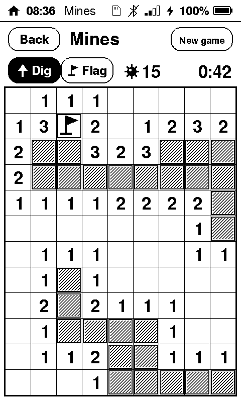

Help · the Games folder
How to play the games on {{NAME}}
Twelve games made for e-paper: turn by turn, played by tap on the board’s screen. Here is each one’s goal, how to play it, a few tips and what the board keeps, with the board’s own screens step by step.
The Games folder
- Games on the home screen is a folder of all twelve, each with a line of how you’re doing: your best, your level, the daily streak, your wins. Tap one to play.
- Back returns to the folder; upright it is top left, and sideways it sits in the panel beside the board (2048 says Games; in Chess it is in the Menu). The status bar goes home.
- The three buttons work too: UP and DOWN move a ring from button to button, and OK presses the ringed one. Sideways swipes stay in the game rather than changing app.
- Leave a game half-played and it is where you left it when you come back, until the board restarts. Your progress (bests, levels, streaks, tallies) is kept in the board’s own memory through restarts and updates.
- Settings → Home screen hides the Games folder, or any game in it.
2048
Goal: slide the tiles so that equal numbers merge, and build a 2048 tile.
How to play
- Swipe on the board, up, down, left or right: every tile slides that way as far as it can.
- Two tiles with the same number that meet merge into one, worth both. Your score goes up by the new tile.
- After each move a new tile appears in an empty square.
- UP and DOWN slide the tiles up and down too; left and right need a swipe.
- When no move is left the screen says No moves left: OK or New game starts again.
Tips
- Keep your biggest tile in a corner and build towards it.
- Tiles get bolder as they grow, and turn white on black from 128. Reaching 2048 isn’t the end: keep going for more.
What’s kept
Your best score and your biggest tile.
-

2048 held sideways, with the score and your best
Memory
Goal: turn up every pair of matching cards in as few moves as you can.
How to play
- Pick Easy: 12 cards or Hard: 20 cards.
- Tap a card to turn it up, then tap a second one.
- A pair stays up. A miss stays up until your next tap, then turns back down.
- Turn up every pair: All pairs found!, with up to three stars for few moves.
Tips
- A miss isn’t wasted: you have seen two more cards. Remember where they are.
- E-paper doesn’t flash a miss back by itself, so take your time to look.
What’s kept
The fewest moves for each size.
-

Memory: the pairs found stay up
Maths Quest
Goal: pass ten levels of mental maths, from warm-up sums to the Champion level, and earn three stars on each.
How to play
- The map shows the ten levels: Warm-up, Easy tables, All tables, Division, Big numbers, Missing number, Bigger times, Order of operations, Fractions and Champion. Tap an open level, or Play level.
- Each question has four answers: tap one. A level is eight questions and a boss question, worth three times the points.
- A wrong answer is struck through and a hint shows, never the answer: try again among the others. You have three hearts; a wrong answer costs one.
- Finish your newest level without running out of hearts and the next one opens.
Tips
- Quick answers (under six seconds) and streaks score more: twice the points from three right in a row, three times from six.
- Stars: three with no wrong answer, two with one or two.
- Questions you miss wait in Practice, which has no hearts, until you get them right first time. Any open level can be played again from the map.
What’s kept
The levels you have opened, the stars and best score for each, and up to 30 questions to practise.
-

The map of ten levels, with the stars won
Daily maths
Goal: answer today’s five questions, and keep a streak of days in a row.
How to play
- Open Daily maths: Today’s five questions, the same all day, since they come from the date.
- Tap one of the four answers. They are mixed, at the Champion level, with three hearts as in Maths Quest.
- Answer all five: Daily done!, and your streak grows by a day.
Tips
- You can play again the same day, just for fun; it doesn’t add to the streak.
- The questions come from the date, which the board gets over WiFi: until it has it, the screen says No date yet.
- Questions you miss go to Maths Quest’s Practice.
What’s kept
Your streak of days.
-

Daily maths is in the Games folder, with your streak under it
Quiz
Goal: get as many of eight questions right as you can.
How to play
- Pick a theme: Science, Space, Nature, Geography, History or Words and numbers, A mix, or Your own theme to type one.
- With the AI on, it writes eight new questions on it; this takes 10 to 40 seconds, and Cancel stops it.
- Tap one of the four answers. The screen says if it’s right, or which one was, with a fact to read.
- Tap Next; after the eighth, the results, then Another one or Themes.
Tips
- A right answer is 100 points, 200 once you have three in a row.
- The AI is optional: it needs your own OpenAI key, WiFi and AI in games on in Settings. Without it, the board’s own 48 questions play, and the screen says why. A mix is always the board’s own; Your own theme needs the AI.
What’s kept
The rounds you have played and your best score out of 8 (full rounds only).
-

A question answered right, with its fact
Adventure
Goal: choose your way through a story to its happy ending.
How to play
- Pick a world: Pirates, Space, Castle, Jungle, Ocean or Mystery, or Your own idea to type one. These need the AI.
- Or pick Lighthouse Key, a story built into the board, which plays without the AI.
- Read the scene, then tap what happens next, from two or three ways.
- After about eight scenes the story ends: The end, and A new story.
Tips
- Each scene takes the AI a moment to write; the screen says so, with Cancel.
- If a scene can’t be written, Try again, or switch to the Board’s story.
What’s kept
How many stories you have finished.
-

A scene, and two ways the story can go
X and O
Goal: get three X in a row, across, down or slanting, before the board gets three O.
How to play
- Pick a level: Easy, Medium, Hard or Best.
- You’re X: tap a square. The board answers with its O.
- Three in a row wins; a full grid with none is a draw.
- Tap New game. Who starts takes turns, a game each.
Tips
- Best can’t be beaten, only drawn. A draw against it is a win of a kind.
- Changing the level when a game has barely begun starts it again at the new level.
What’s kept
Your wins, draws and losses, and the level you chose.
-

A game against the board on Hard
Tutor
Goal: learn a geometry lesson, then get its exercises right first time.
How to play
- Tap Grade 7, then Math - Geometry, then a lesson: the quadrilateral (4.1 to 4.8) or the Pythagorean theorem (7.2).
- Read 1. Lesson summary and 2. Worked examples, three of them, with Next and Back.
- Then 3. Practice: 6 to 8 exercises. Tap the right answer.
- Stuck? Hints gives two clues that never give the answer away. After a wrong answer the screen says why, and Solution shows the whole working.
- After the last one, See the result: how many you got right first time.
Tips
- The numbers are new each time, so an exercise can be practised again and again.
- Tutor is in Romanian on a board set to Romanian, and in English on any other.
- Clear progress on a lesson starts it fresh: tap it, then Sure? Tap again.
What’s kept
Your best result for each lesson (right first time).
-

An exercise: four answers, and Hints
Solitaire
Goal: move every card to the four foundations, each suit from ace to king.
How to play
- Tap a card to move it: it goes to its foundation, or to the only column it fits.
- If it could go to more than one place, it is picked up (drawn black): Now tap where it goes.
- In the columns, cards go down in alternating colours; an empty column takes a king.
- Tap the stock to turn a card. Draw 1 turns one at a time, Draw 3 three (harder): choose on the New game card.
- Undo takes back a move at a time. Once every card in the columns is face up, the game plays itself out.
Tips
- Turn up the face-down cards in the columns first: they are the ones that block you.
- When nothing can get anywhere the screen says No moves left: Undo, or start a new game.
What’s kept
Your wins out of the games played, and the fewest moves in a win.
-

A card picked up, waiting for where it goes
Mines
Goal: open every square that isn’t a mine, without digging one up.
How to play
- Choose a size on the New game card: Small (8 × 10, 10 mines), Medium (9 × 12, 16) or Large (10 × 13, 20).
- Tap any square: the first one is always safe, and opens a patch.
- A number says how many mines touch that square.
- Switch to Flag and tap a square you know is a mine; tap it again to take the flag off. Switch back to Dig to open squares.
- Tap a number that already has its flags around it to open the rest around it.
Tips
- The counter shows the mines still to flag, and the clock times the game.
- OK swaps Dig and Flag. Dig a mine and the screen says Boom!, shows the mines and crosses any wrong flags.
What’s kept
Your wins and the quickest win at each size.
-

The field opened, one mine flagged
Four in a Row
Goal: line up four of your discs, across, down or slanting, before the board does.
How to play
- Pick a level: Easy, Medium or Hard.
- You’re the rings: tap a column, and your disc drops to the lowest free place.
- The board replies at once with a solid disc; the disc played last has a dot.
- Four in a line wins and is struck through. Tap New game: who starts takes turns, a game each.
Tips
- The middle column is in more lines of four than any other: start there.
- With the buttons, UP and DOWN ring a column and show where the disc would land; OK drops it.
What’s kept
Your wins, draws and losses, and the level you chose.
-

A win on Easy, the four struck through
Chess
Goal: checkmate the board’s king. You play White.
How to play
- The board fills the screen. Tap one of your pieces: its moves show as dots, its captures as corners.
- Tap where it goes. Tap the piece again to put it back, or another of yours to switch.
- The board shows Thinking..., then plays its reply: The board played Nc6. Your move.
- A pawn that reaches the last row asks what to become.
- Menu opens a panel with Back, the levels (Easy, Medium, Hard), your tally, Undo and Resign (tap it twice); Close shuts it.
Tips
- Undo takes back your last move and the board’s reply. A new level counts from the board’s next move.
- The last move’s two squares are framed, and a king in check gets a thicker frame.
- A game also ends in stalemate, or a draw: the same position three times, fifty moves with no capture or pawn move, or too few pieces to checkmate.
- Home is a swipe up from the bottom edge, or UP and DOWN together.
What’s kept
Your wins, draws and losses (resigning counts as a loss), and the level you chose.
-

A pawn picked, its moves shown as dots
More about the games
The rules of Solitaire, Mines, Four in a Row and Chess come from CrossPlay by Mario Ruiz (MIT); the chess pieces are Maurizio Monge’s “celtic” set (MIT). The games come with {{NAME}}, free; install it on your board. Read what came in 1.8: Solitaire, Mines, Four in a Row and Chess and the first eight games, or the user guide.